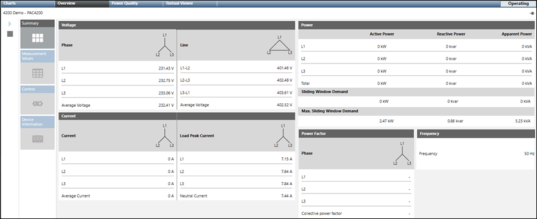

Monitor the Powermanager Devices
- Navigate to the Overview tab.
- Monitor that relevant values display in the Voltage, Power, Current, Power Factor, and Frequency sections.
- The device is connected and communicates with the Powermanager extension.
